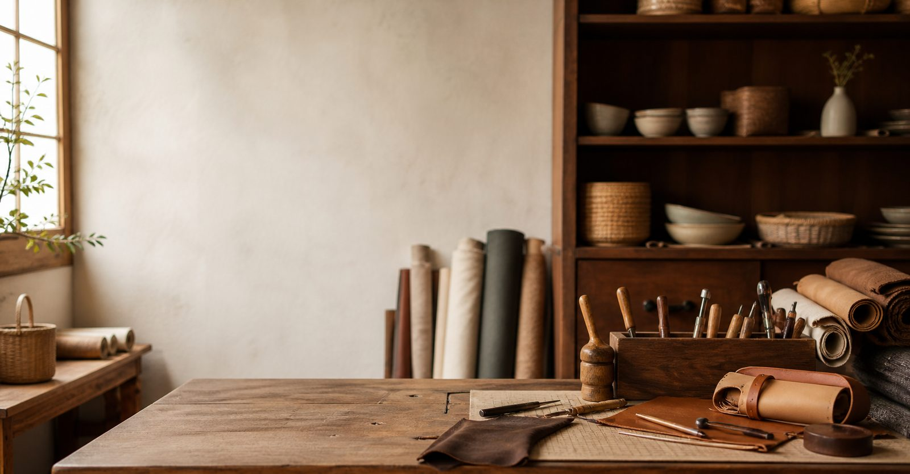

우리동네공방 · 이번 주
손끝이 있는 곳,
전국공방
이번 주 전국 공방 소식을 소개·뉴스·인터뷰·정보 네 코너로 정리했습니다. 등록된 공방은 지도와 게시판에서 지역과 분야로 찾아보세요.
이번 주 키워드
네 코너
한 주의 공방 소식을 네 갈래로
새로 조명된 공방, 업계와 지역의 뉴스, 작가의 목소리, 그리고 지금 신청할 수 있는 정보까지 — 뉴스레터와 같은 구성으로 정리했습니다.
이번 주 주요 소식
지금 가장 많이 읽은 소식
공방 등록
우리 동네 공방을
지도에 올려 주세요
공방 이름과 주소, 다루는 분야, 원데이클래스 운영 여부만 적어 주시면 확인 후 게시판과 지도에 표시합니다. 등록은 무료입니다.
공방 소개 · Intro
확인된 공방, 그리고 지역의 작업실
주소와 운영 내용이 확인된 공방만 소개합니다. 지도에서 위치를 보고, 게시판에서 분야·지역으로 찾아볼 수 있습니다.
이번 주 새로 조명된 공방
소개 코너에서 다룬 공간
공방 뉴스 · News
이번 주 공예·공방 소식
업계 지표부터 지역 공방 거리, 팝업과 페어까지. 원문 링크로 바로 이동할 수 있습니다.
작가 인터뷰 · Interview
공방을 지키는 사람들의 말
기사에서 직접 확인한 인터뷰만 싣습니다. 인용은 원문에서 옮겼습니다.
우리동네공방 뉴스레터 아카이브 · 2024–2026
아카이브 열기
지난 호의 소개·뉴스·인터뷰·정보를 한 번에 볼 수 있습니다.
아카이브 · ARCHIVE
지난 3년의 공방 소식, 151건을 한자리에
2023년 12월부터 2026년 11월까지 구글 알리미로 모은 1,150여 통의 메일에서 공방·공예 기사 151건을 골라 8개 호, 네 코너로 정리했습니다. 호와 코너로 걸러 보거나 키워드로 찾아보세요. 기사 제목을 누르면 원문으로 이동합니다.
호
코너
검색
지원·공모 정보 · Guide
지금 신청할 수 있는 것들
마감이 가까운 순서로 정렬했습니다. 마감일은 브라우저의 오늘 날짜를 기준으로 계산합니다.
전국 공방 지도 · Live Board
지도에서 찾고,
게시판에서 등록하세요
등록 게시판은 공개 구글 시트를 그대로 불러옵니다. 시트에 새로 승인된 공방은 새로고침하면 이 페이지에 바로 나타납니다.
지역별 등록 현황
막대를 누르면 게시판이 그 지역으로 좁혀집니다. 다시 누르면 전체로 돌아갑니다.
지도에 대하여
채운 점은 주소를 좌표로 확인한 곳, 빈 점은 주소 좌표를 확인하지 못해 지역 중심에 표시한 곳입니다. 주소는 등록 신청서에 적어 주신 내용을 그대로 쓰고, 승인된 항목만 지도와 게시판에 나타납니다.
등록 게시판을 불러오는 중…
게시판 데이터: 전국공방_등록_및_게시판DB · 승인된 항목만 표시합니다. 등록·수정은 신청서로 받습니다.
업무 관리 · Tasks
프로젝트 · 일감 · 간트로 일을 굴립니다
프로젝트를 만들고 일감을 상위-하위로 나눠 번호(#1, #2…)로 관리합니다. 목록·간트·캘린더로 일정을 보고, 일감에서 바로 기안을 올립니다.
전자결재 · Approvals
합의·참조·전결까지 한 줄기로 결재합니다
양식을 골라 기안을 올리고 승인·합의·참조를 함께 세웁니다. 전결 규정과 대결을 적용하고, 인쇄본(서명란)과 CSV로 문서함을 남깁니다.
게시판
게시판
게시판을 찾을 수 없습니다.
페이지
페이지를 찾을 수 없습니다. 주소를 확인해 주세요.
게시판
글을 찾을 수 없습니다. 주소를 확인해 주세요.
통합 검색
무엇을 찾으세요?
제목·요약·본문·태그·게시판 이름에서 한 번에 찾습니다. 낱말을 띄어 쓰면 모두 들어간 글만 보여 줍니다.
오프라인 · 최근 본 글
최근 본 글을 그대로 읽습니다
이 브라우저에서 열어 본 글을 저장해 두었습니다. 인터넷이 끊겨도 아래 글은 본문까지 열립니다.
아직 저장된 글이 없습니다. 온라인일 때 글을 하나 읽으면 여기에 쌓입니다.
접수 조회
접수번호로 진행 상태를 확인합니다
로그인 없이 접수번호와 신청한 이메일만으로 확인할 수 있습니다. 접수 → 확정 → 완료 순서로 상태가 바뀝니다.
마이페이지 · My page
내 정보와 활동
닉네임·찜한 공방·내가 쓴 댓글을 한 자리에서 봅니다.